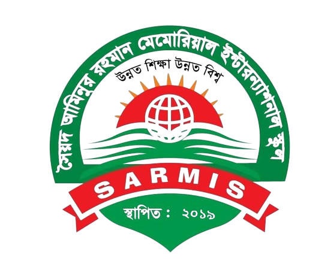
Saiad Aminur Memorial International School, Nilphamari.
Education|Disciplin|Character
School Code:6655|Collage Code:8800|EIIN:123432
Come for Education Go for Service


 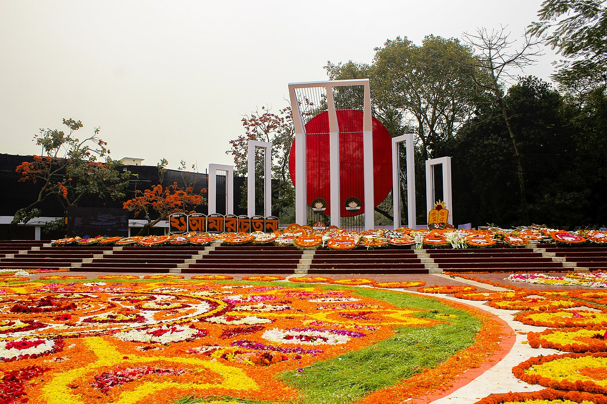
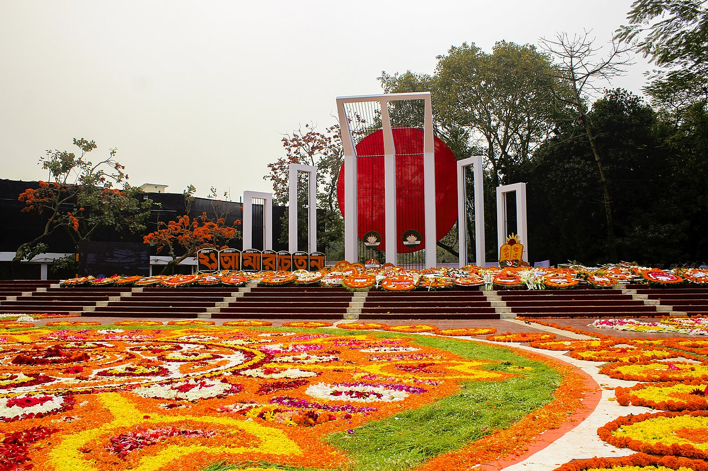
 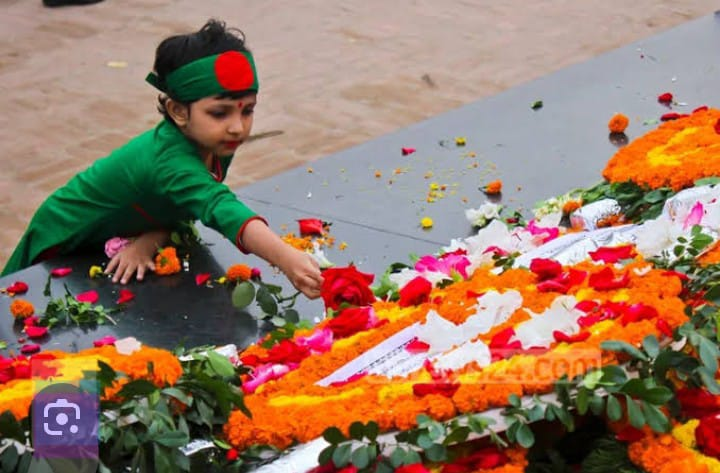
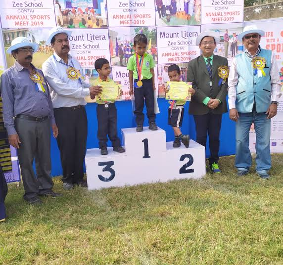
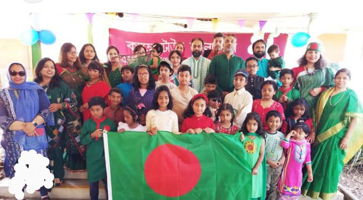
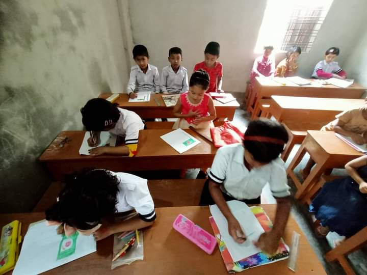
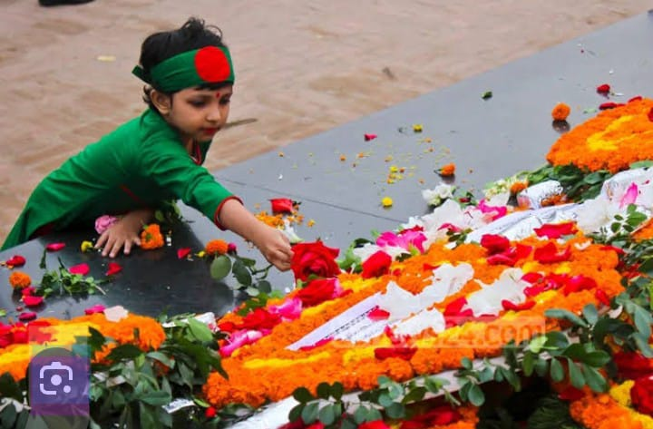
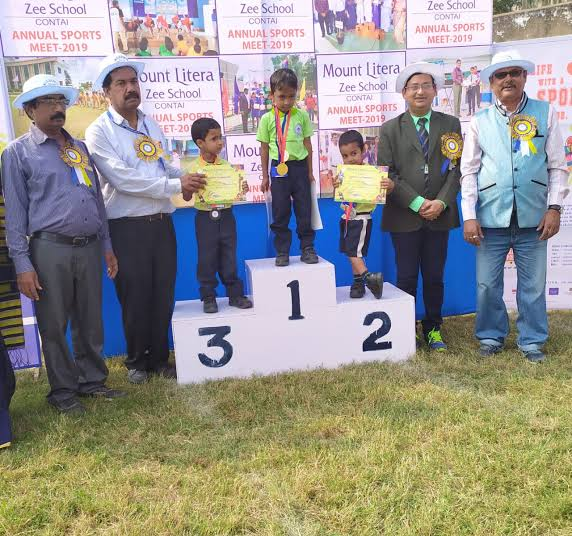
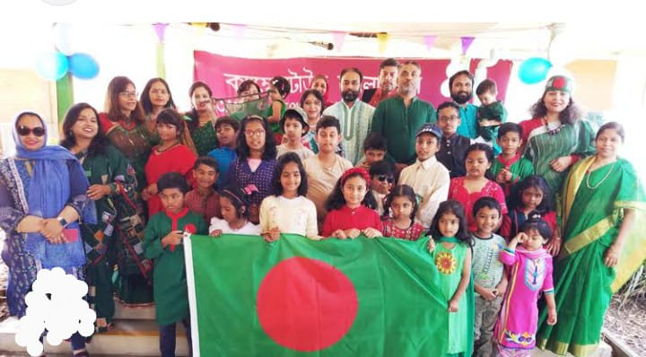
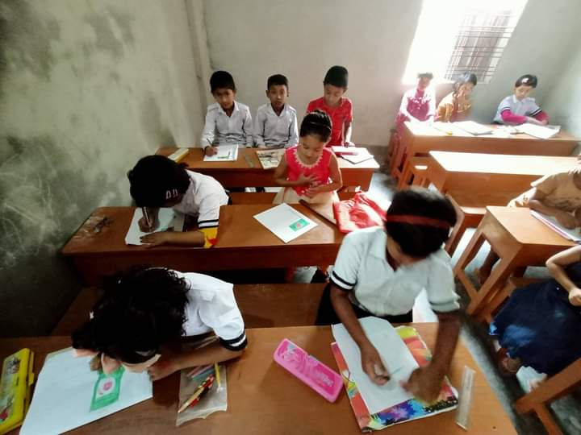
The school is committed to the exploration of students through an exhaustive program, interesting instructions and envious standard of achievements. The curriculum is comprehensive and based on core subjects going beyond academic book knowledge but also facilitating development of concepts, ideas and skills. CPSCS provides unique sports facilities and opportunities for co-curricular activities.This institution is administered by Bangladesh Army and supervised by the Area Commander, Saidpur Area. By every passing year, CPSCS is growing in terms of its academic excellence, infrastructural expansion and staff additions. Currently a Lieutenant Colonel from Bangladesh Army is posted as the Principal. Other faculty members are drawn from around the country and they make a good mix of experienced teaching staff.
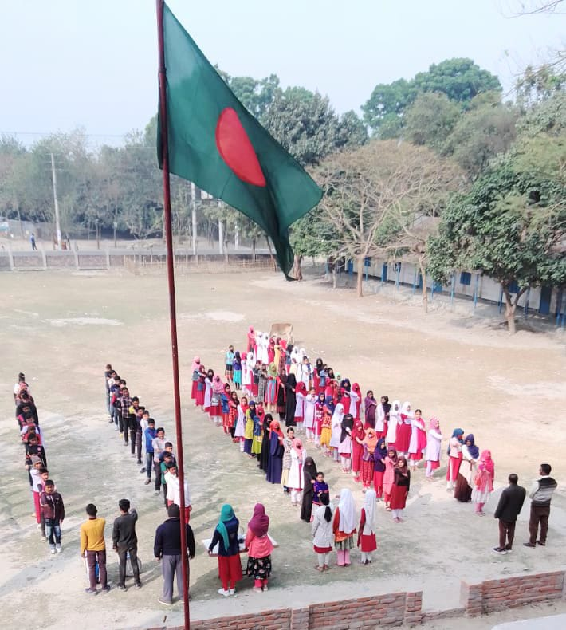সম্মানিত অভিভাবকবৃন্দ, আমরা অত্যন্ত আনন্দের সাথে জানাচ্ছি যে, অত্র শিক্ষা প্রতিষ্ঠানে অটোমেশন সিস্টেম বাস্তবায়ন হয়েছে এবং আপনারা এখন থেকে অনুপস্থিত শিক্ষার্থীর এসএমএস, প্রোফাইল, পরীক্ষার ফলাফল, বেতন ইত্যাদি যাবতীয় তথ্য অনলাইন এবং myCampus Lite মোবাইল Apps এর মাধ্যমে দেখতে পারবেন।.


2015-present
BBA MBA (Marketing) Dhaka University
2018-present
BSC Math Chitagong University
2020-present
BBA Accounting Daffodil University
2021-present
MBA (Marketing) Dhaka University
2020-present
BBA MBA Dhaka National University
2021-present
BA Social Science Dhaka University
{kind=link}